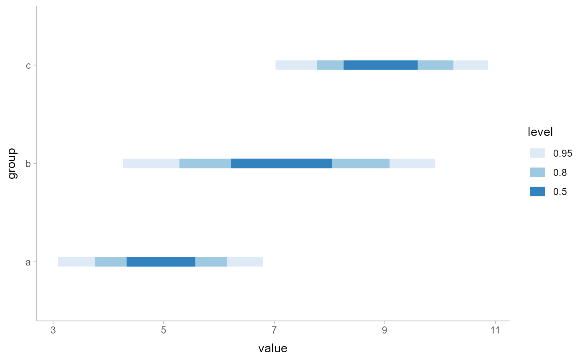
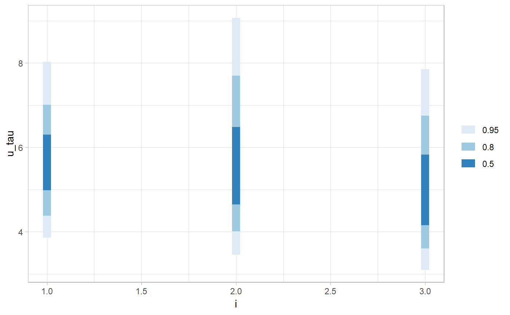

A combination of stat_sample_slabinterval() and
geom_slabinterval() with sensible defaults.
While the corresponding geoms are intended for use on
data frames that have already been summarized using a point_interval()
function, these stats are intended for use directly on data frames of draws, and
will perform the summarization using a point_interval() function.
stat_interval( mapping = NULL, data = NULL, geom = "interval", position = "identity", ..., orientation = NA, interval_function = NULL, interval_args = list(), point_interval = median_qi, .width = c(0.5, 0.8, 0.95), show_point = FALSE, show_slab = FALSE, na.rm = FALSE, show.legend = NA, inherit.aes = TRUE, .prob, fun.data, fun.args )
| mapping | Set of aesthetic mappings created by |
|---|---|
| data | The data to be displayed in this layer. There are three options: If A A |
| geom | Use to override the default connection between
|
| position | Position adjustment, either as a string, or the result of a call to a position adjustment function. |
| ... | Other arguments passed to |
| orientation | Whether this geom is drawn horizontally ( |
| interval_function | Custom function for generating intervals (for most common use cases the |
| interval_args | Additional arguments passed to |
| point_interval | A function from the |
| .width | The |
| show_point | Should the point portion of the geom be drawn? Default |
| show_slab | Should the slab portion of the geom be drawn? Default |
| na.rm | If |
| show.legend | Should this layer be included in the legends? Default is |
| inherit.aes | If |
| .prob | Deprecated. Use |
| fun.data | Deprecated. Use |
| fun.args | Deprecated. Use |
A ggplot2::Stat representing a multiple interval geometry which can
be added to a ggplot() object.
The following variables are computed by this stat and made available for
use in aesthetic specifications (aes()) using the stat() or after_stat()
functions:
x or y: For slabs, the input values to the slab function.
For intervals, the point summary from the interval function. Whether it is x or y depends on orientation
xmin or ymin: For intervals, the lower end of the interval from the interval function.
xmax or ymax: For intervals, the upper end of the interval from the interval function.
.width: For intervals, the interval width as a numeric value in [0, 1].
level: For intervals, the interval width as an ordered factor.
f: For slabs, the output values from the slab function (such as the PDF, CDF, or CCDF),
determined by slab_type.
pdf: For slabs, the probability density function.
cdf: For slabs, the cumulative distribution function.
n: For slabs, the number of data points summarized into that slab.
The slab+interval stats and geoms have a wide variety of aesthetics that control
the appearance of their three sub-geometries: the slab, the point, and
the interval.
These stats support the following aesthetics:
x: x position of the geometry (when orientation = "vertical"); or sample data to be summarized
(when orientation = "horizontal") except for stat_dist_ geometries (which use only one of x or y
at a time along with the dist aesthetic).
y: y position of the geometry (when orientation = "horizontal"); or sample data to be summarized
(when orientation = "vertical") except for stat_dist_ geometries (which use only one of x or y
at a time along with the dist aesthetic).
In addition, in their default configuration (paired with geom_interval()) the following aesthetics are supported by the underlying geom:
Slab-specific aesthetics
thickness: The thickness of the slab at each x value (if orientation = "horizontal") or
y value (if orientation = "vertical") of the slab.
side: Which side to place the slab on. "topright", "top", and "right" are synonyms
which cause the slab to be drawn on the top or the right depending on if orientation is "horizontal"
or "vertical". "bottomleft", "bottom", and "left" are synonyms which cause the slab
to be drawn on the bottom or the left depending on if orientation is "horizontal" or
"vertical". "topleft" causes the slab to be drawn on the top or the left, and "bottomright"
causes the slab to be drawn on the bottom or the right. "both" draws the slab mirrored on both
sides (as in a violin plot).
scale: What proportion of the region allocated to this geom to use to draw the slab. If scale = 1,
slabs that use the maximum range will just touch each other. Default is 0.9 to leave some space.
justification: Justification of the interval relative to the slab, where 0 indicates bottom/left
justification and 1 indicates top/right justification (depending on orientation). If justification
is NULL (the default), then it is set automatically based on the value of side: when side is
"top"/"right" justification is set to 0, when side is "bottom"/"left"
justification is set to 1, and when side is "both" justification is set to 0.5.
datatype: When using composite geoms directly without a stat (e.g. geom_slabinterval()), datatype is used to
indicate which part of the geom a row in the data targets: rows with datatype = "slab" target the
slab portion of the geometry and rows with datatype = "interval" target the interval portion of
the geometry. This is set automatically when using ggdist stats.
Interval-specific aesthetics
xmin: Left end of the interval sub-geometry (if orientation = "horizontal").
xmax: Right end of the interval sub-geometry (if orientation = "horizontal").
ymin: Lower end of the interval sub-geometry (if orientation = "vertical").
ymax: Upper end of the interval sub-geometry (if orientation = "vertical").
Point-specific aesthetics
shape: Shape type used to draw the point sub-geometry.
Color aesthetics
colour: (or color) The color of the interval and point sub-geometries.
Use the slab_color, interval_color, or point_color aesthetics (below) to
set sub-geometry colors separately.
fill: The fill color of the slab and point sub-geometries. Use the slab_fill
or point_fill aesthetics (below) to set sub-geometry colors separately.
alpha: The opacity of the slab, interval, and point sub-geometries. Use the slab_alpha,
interval_alpha, or point_alpha aesthetics (below) to set sub-geometry colors separately.
colour_ramp: (or color_ramp) A secondary scale that modifies the color
scale to "ramp" to another color. See scale_colour_ramp() for examples.
fill_ramp: (or fill_ramp) A secondary scale that modifies the fill
scale to "ramp" to another color. See scale_fill_ramp() for examples.
Line aesthetics
size: Width of the outline around the slab (if visible). Also determines the width of
the line used to draw the interval and the size of the point, but raw
size values are transformed according to the interval_size_domain, interval_size_range,
and fatten_point parameters of the geom (see above). Use the slab_size,
interval_size, or point_size aesthetics (below) to set sub-geometry line widths separately
(note that when size is set directly using the override aesthetics, interval and point
sizes are not affected by interval_size_domain, interval_size_range, and fatten_point).
stroke: Width of the outline around the point sub-geometry.
linetype: Type of line (e.g., "solid", "dashed", etc) used to draw the interval
and the outline of the slab (if it is visible). Use the slab_linetype or
interval_linetype aesthetics (below) to set sub-geometry line types separately.
Slab-specific color/line override aesthetics
slab_fill: Override for fill: the fill color of the slab.
slab_colour: (or slab_color) Override for colour/color: the outline color of the slab.
slab_alpha: Override for alpha: the opacity of the slab.
slab_size: Override for size: the width of the outline of the slab.
slab_linetype: Override for linetype: the line type of the outline of the slab.
Interval-specific color/line override aesthetics
interval_colour: (or interval_color) Override for colour/color: the color of the interval.
interval_alpha: Override for alpha: the opacity of the interval.
interval_size: Override for size: the line width of the interval.
interval_linetype: Override for linetype: the line type of the interval.
Point-specific color/line override aesthetics
point_fill: Override for fill: the fill color of the point.
point_colour: (or point_color) Override for colour/color: the outline color of the point.
point_alpha: Override for alpha: the opacity of the point.
point_size: Override for size: the size of the point.
Other aesthetics (these work as in standard geoms)
width
height
group
See examples of some of these aesthetics in action in vignette("slabinterval").
Learn more about the sub-geom override aesthetics (like interval_color) in the scales documentation.
Learn more about basic ggplot aesthetics in vignette("ggplot2-specs").
See geom_interval() for the geom versions, intended
for use on points and intervals that have already been summarized using a point_interval() function.
See stat_pointinterval() for a similar stat intended for
point summaries and intervals.
See stat_sample_slabinterval() for a variety of other
stats that combine intervals with densities and CDFs.
See geom_slabinterval() for the geom that these geoms wrap. All parameters of that geom are
available to these geoms.
library(dplyr) library(ggplot2) theme_set(theme_ggdist()) data(RankCorr_u_tau, package = "ggdist") RankCorr_u_tau %>% group_by(i) %>% ggplot(aes(y = factor(i), x = u_tau)) + stat_interval() + scale_color_brewer()  RankCorr_u_tau %>% group_by(i) %>% ggplot(aes(x = factor(i), y = u_tau)) + stat_interval() + scale_color_brewer() 